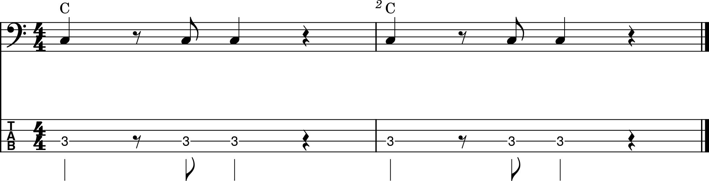
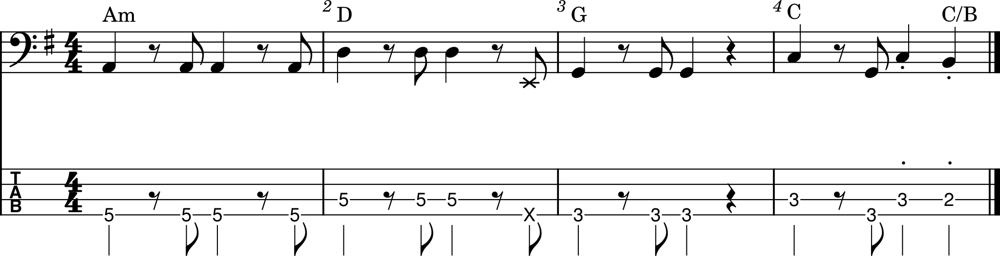
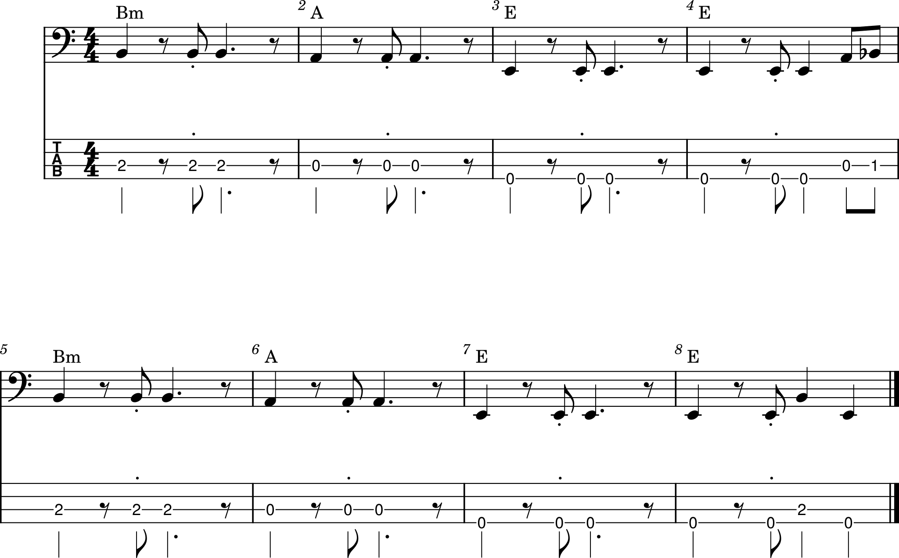

The basic groove is a three note pattern.

In New Light by John Mayer, a quarter note on the 4e is added. This is a common variation.

In Wicked Game by Chris Isaak, the 2e is accented and the 2 is a dotted quarter note.
